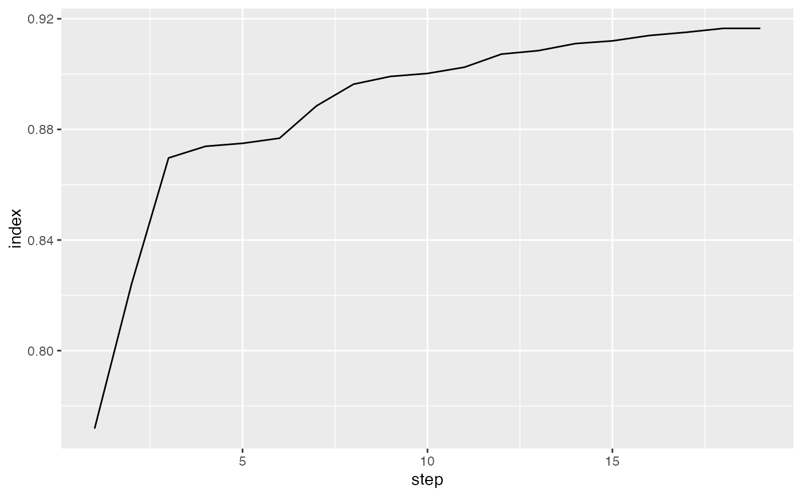

Compute index values for a tour history.
path_index(history, index_f, data = attr(history, "data"))Arguments
- history
list of bases produced by
save_history(or otherwise)- index_f
index function to apply to each basis
- data
dataset to be projected on to bases
See also
save_history for options to save history
Examples
fl_holes <- save_history(flea[, 1:6], guided_tour(holes()), sphere = TRUE)
#> Converting input data to the required matrix format.
#> Value 0.842 5.3 % better - NEW BASIS
#> Value 0.846 0.5 % better - NEW BASIS
#> Value 0.892 5.4 % better - NEW BASIS
#> Value 0.912 2.2 % better - NEW BASIS
#> Value 0.913 0.1 % better - NEW BASIS
#> Value 0.913 0.0 % better
#> Value 0.913 0.0 % better
#> Value 0.915 0.2 % better - NEW BASIS
#> Value 0.915 0.1 % better
#> Value 0.915 0.1 % better
#> Value 0.915 0.1 % better
#> Value 0.915 0.0 % better
#> Value 0.915 0.0 % better
#> Value 0.915 0.1 % better
#> Value 0.915 0.0 % better
#> Value 0.915 0.1 % better
#> Value 0.915 0.1 % better
#> Value 0.915 0.1 % better
#> Value 0.915 0.1 % better
#> Value 0.915 0.0 % better
#> Value 0.915 0.1 % better
#> Value 0.915 0.0 % better
#> Value 0.915 0.0 % better
#> Value 0.915 0.1 % better
#> Value 0.915 0.0 % better
#> Value 0.915 0.1 % better
#> Value 0.915 0.0 % better
#> Value 0.915 0.0 % better
#> Value 0.915 0.0 % better
#> Value 0.915 0.0 % better
#> Value 0.915 0.0 % better
#> Value 0.915 0.0 % better
#> No better bases found after 25 tries. Giving up.
#> Final projection:
#> -0.063 -0.432
#> -0.086 0.830
#> -0.724 0.156
#> -0.115 -0.063
#> -0.671 -0.233
#> 0.033 -0.205
path_index(fl_holes, holes())
#> [1] 0.7998955 0.8420007 0.8461874 0.8920769 0.9118483 0.9130624 0.9145812
#> [8] 0.9145812
#> attr(,"class")
#> [1] "path_index"
## path_index(fl_holes, cmass())
plot(path_index(fl_holes, holes()), type = "l")

## plot(path_index(fl_holes, cmass()), type = "l")
# \donttest{
# Use interpolate to show all intermediate bases as well
hi <- path_index(interpolate(fl_holes), holes())
hi
#> [1] 0.7998955 0.8026644 0.8055998 0.8086583 0.8117949 0.8149635 0.8181178
#> [8] 0.8212126 0.8242043 0.8270523 0.8297192 0.8321722 0.8343831 0.8363295
#> [15] 0.8379949 0.8393690 0.8404481 0.8412351 0.8417392 0.8419760 0.8419760
#> [22] 0.8434090 0.8445774 0.8454505 0.8460030 0.8460030 0.8482312 0.8506346
#> [29] 0.8531993 0.8559043 0.8587224 0.8616212 0.8645643 0.8675126 0.8704263
#> [36] 0.8732660 0.8759944 0.8785775 0.8809857 0.8831945 0.8851847 0.8869424
#> [43] 0.8884590 0.8897307 0.8907577 0.8915434 0.8915434 0.8948260 0.8979168
#> [50] 0.9007806 0.9033834 0.9056925 0.9076763 0.9093056 0.9105530 0.9113939
#> [57] 0.9118075 0.9118075 0.9125873 0.9130000 0.9130000 0.9140279 0.9145298
#> [64] 0.9145298 0.9145298
#> attr(,"class")
#> [1] "path_index"
plot(hi)
 # }
# }